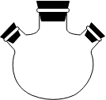
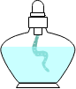
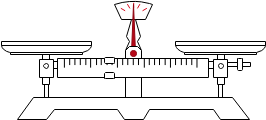
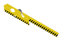
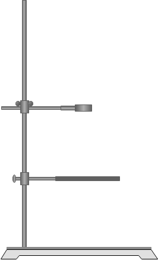

掌握各类仪器的用途和使用注意事项
用途：用于配制溶液、溶解物质、加热液体等。
注意事项：加热时需垫石棉网，不能直接加热。
规格特点：有50mL、100mL、250mL、500mL等多种规格。
用途：用于少量试剂的反应容器，可直接加热。
注意事项：加热时试管口不能对着人，液体体积不超过试管容积的1/3。
规格特点：有10mL、15mL、20mL等多种规格。
用途：用于分离互不相溶的液体，也可用于向反应器中滴加液体。
注意事项：使用前需检查是否漏水，分液时下层液体从下口放出，上层液体从上口倒出。
规格特点：有60mL、125mL、250mL等多种规格。
用途：用于过滤和向小口容器中转移液体。
注意事项：过滤时需用滤纸，滤纸边缘应低于漏斗边缘。
规格特点：按口径大小分类，有不同规格。
用途：用于向反应器中添加液体，防止气体逸出。
注意事项：使用时漏斗颈应插入液面以下，形成液封。
规格特点：漏斗颈较长，便于形成液封。
用途：用于向反应体系中滴加液体，可保持滴加过程中压力恒定。
注意事项：使用前需检查是否漏气，滴加速度应适中。
规格特点：有侧管与反应体系连通，保持压力平衡。
用途：用于减压过滤，加快过滤速度。
注意事项：需与抽滤瓶配套使用，过滤前需润湿滤纸。
规格特点：底部有许多小孔，与抽滤瓶配套使用。
用途：用于滴定实验，也可用于加热和反应容器。
注意事项：加热时需垫石棉网，振荡时用手握住瓶颈。
规格特点：有50mL、100mL、250mL、500mL等多种规格。
用途：用于准确配制一定体积、一定浓度的溶液。
注意事项：不能加热，不能用于溶解固体，配制溶液时需用玻璃棒引流。
规格特点：有50mL、100mL、250mL、500mL、1000mL等多种规格。
用途：用于碘量法等需要防止碘挥发的滴定实验。
注意事项：使用时需塞紧瓶塞，可加少量水封。
规格特点：瓶口有磨口塞，瓶塞顶部有一小孔。
用途：用于盛放酸性溶液或氧化性溶液的滴定。
注意事项：不能盛放碱性溶液，使用前需检查是否漏水，排气泡。
规格特点：有25mL、50mL等规格，下端有玻璃活塞。
用途：用于盛放碱性溶液的滴定。
注意事项：不能盛放酸性或氧化性溶液，使用前需检查是否漏水，排气泡。
规格特点：有25mL、50mL等规格，下端有橡胶管和玻璃珠。
用途：用于回流操作，使蒸气冷凝回流。
注意事项：冷却水应下进上出，使用时需与烧瓶配套。
规格特点：内管为球形，冷却面积大，冷却效果好。
用途：用于蒸馏操作，使蒸气冷凝为液体。
注意事项：冷却水应下进上出，使用时需与蒸馏烧瓶配套。
规格特点：内管为直形，适合蒸馏低沸点物质。
用途：用于加热液体，进行化学反应。
注意事项：加热时需垫石棉网，不能直接加热。
规格特点：底部为圆形，受热均匀，有50mL、100mL、250mL、500mL等多种规格。
用途：用于蒸馏操作，分离沸点不同的液体混合物。
注意事项：加热时需垫石棉网，温度计水银球应位于支管口处。
规格特点：有支管，用于连接冷凝管，有50mL、100mL、250mL、500mL等多种规格。

用途：用于需要同时添加多种试剂或连接多种仪器的反应。
注意事项：加热时需垫石棉网，各瓶口应配相应的塞子。
规格特点：有三个瓶口，可同时连接多种仪器，有100mL、250mL、500mL等多种规格。
用途：用于灼烧固体物质。
注意事项：使用时需用坩埚钳夹持，高温时不能骤冷。
规格特点：有瓷质、石英、铂等材质，有不同大小规格。
用途：用于蒸发液体，浓缩溶液。
注意事项：可直接加热，蒸发时应不断搅拌。
规格特点：有瓷质、玻璃等材质，有不同大小规格。
用途：用于粗略量取液体体积。
注意事项：不能加热，不能用于溶解固体，读数时视线应与凹液面最低处相切。
规格特点：有10mL、25mL、50mL、100mL、250mL、500mL等多种规格。

用途：用于加热实验仪器。
注意事项：使用时不能向燃着的酒精灯添加酒精，不能用燃着的酒精灯点燃另一个酒精灯，熄灭时用灯帽盖灭。
规格特点：有不同大小规格，常用的为150mL。
用途：与布氏漏斗配套进行减压过滤（抽滤），加快过滤速度。
注意事项：不能加热，连接真空泵时需控制负压，防止炸裂。
规格特点：瓶身有支管连接真空泵，常见规格250mL、500mL、1000mL。
用途：用于吸取和滴加少量液体试剂。
注意事项：滴加时不能伸入容器内，不能倒置，专用滴管不能混用。
规格特点：由胶头和玻璃管组成，无固定规格，按滴液量适配。
用途：用作少量试剂的反应容器，可连接导管进行气体制备或性质实验。
注意事项：可直接加热，加热时试管口略向下倾斜，防止冷凝水倒流。
规格特点：试管侧壁有支管，常见规格15mL、20mL、25mL。

用途：用于粗略称量固体物质的质量，精度0.1g。
注意事项：左物右码，称量前调平，腐蚀性药品需放烧杯中称量。
规格特点：最大量程有100g、200g、500g等，附砝码和游码。
用途：用于干燥气体或除去气体中的杂质。
注意事项：气体从粗口进细口出，干燥剂需选不与气体反应的固体。
规格特点：有球形、U形等，常见干燥剂为碱石灰、无水氯化钙。
用途：蒸馏操作中连接冷凝管和接收瓶，导出冷凝后的液体。
注意事项：接口需密封，防止液体溅出或气体泄漏。
规格特点：弯管呈牛角状，口径与冷凝管、锥形瓶适配。
用途：用作干燥管、量气管，或进行气体除杂、缓冲。
注意事项：装入固体干燥剂时两端需放棉花，防止堵塞。
规格特点：玻璃管呈U形，管径和长度有多种规格。
用途：测量反应体系或液体的温度，如蒸馏、水浴加热。
注意事项：不能当作搅拌棒，蒸馏时水银球位于支管口处。
规格特点：量程有0-100℃、0-200℃等，精度0.1℃或1℃。

用途：夹持试管进行加热操作。
注意事项：夹在试管中上部（距管口1/3处），加热时手握长柄。
规格特点：木质或金属材质，适配不同管径的试管。

用途：固定和支撑各种实验仪器，如烧瓶、冷凝管、滴定管。
注意事项：仪器固定要牢固，铁圈/铁夹与仪器接触处垫石棉网。
规格特点：由铁座、铁立柱、铁圈、铁夹组成，高度可调节。
用途：支撑加热容器，如烧杯、蒸发皿、坩埚。
注意事项：加热时需配合石棉网或泥三角使用，放置平稳。
规格特点：铁质三角架，高度和架脚间距有不同规格。
用途：放置坩埚，配合三脚架进行灼烧操作。
注意事项：高温下不能骤冷，使用前检查瓷管是否破损。
规格特点：由铁丝和瓷管组成，三角形状，适配不同大小坩埚。
用途：1.搅拌：溶解时加速固体溶解，蒸发时防止液体局部过热飞溅。2.引流：过滤或向容量瓶中转移液体时引导液体流向，防止洒出。3.蘸取：蘸取少量溶液，用于 pH 测定、焰色反应等。4.转移：转移固体药品或少量液体。
注意事项：搅拌时不可用力过猛，避免碰击容器壁和底，防止玻璃仪器破裂。引流时下端要轻靠在容器内壁。蘸取不同试剂前需清洗并干燥，防止交叉污染。
规格特点：两端通常烧圆处理，避免划伤。常见长度：10cm、15cm、20cm、25cm、30cm等，直径一般为4～6mm。